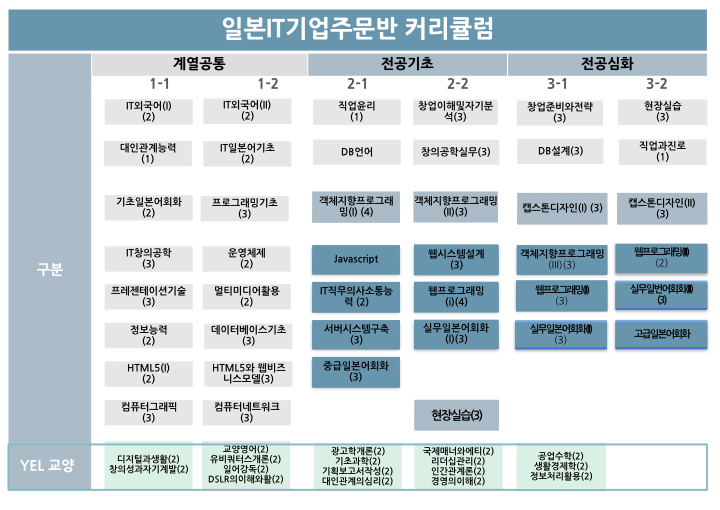

* 일본IT기업이 요구하는 직무능력과 일본어능력, 국제화마인드를 겸비한 일본IT기업 맞춤형 인재 양성
* 4차 산업혁명 시대가 요구하는 인간 중심 자기 주도적 창의 인재 양성
일본IT기업이 요구하는 직무능력과 일본어능력, 국제화마인드를 겸비한 일본 IT 분야 전문가 및 4차 산업혁명 시대가 요구하는 인간 중심 자기 주도적 창의 인재를 양성하기 위한 교육과정으로 편성

일본어 분야
일본어 기초부터 실무회화, 면접일본어까지 체계적인 교육
학기중/방학 기간 10h/1주 이상의 특강
웹솔루션 분야
jQuery, Ajax 등 프론트엔드부터 DB, 프레임워크 등 백엔드까지 풀스택 엔지니어 양성
국제화마인드 분야
일본현지학기제, 현지적응 1:1 컨설팅, 1:1 취업면접 컨설팅, 동경현지면접회, 일본기업설명회 등
협약업체
글로벌터치, 스타티아라보, 스타티아레이즈, WiLL, 오란, 테스링크, 리쿠루팅파트너 등
* 일본IT 대기업, 상장기업, 벤처기업
졸업과 동시에 업체로 취업이 가능한 곳
소프트뱅크, NTT Comm, 라쿠텐, 야후 재팬, 제이콤, 호야, GMO 그룹, 사이버에이전트, KDDI, 이스토어, 라이풀 등
언론에서도 주목하고 있는 곳
MBC, KBS, SBS, 조선일보, 중앙일보, 동아일보, 매일신문, 전자신문, 영남일보, NHK, TBS도쿄방송 등